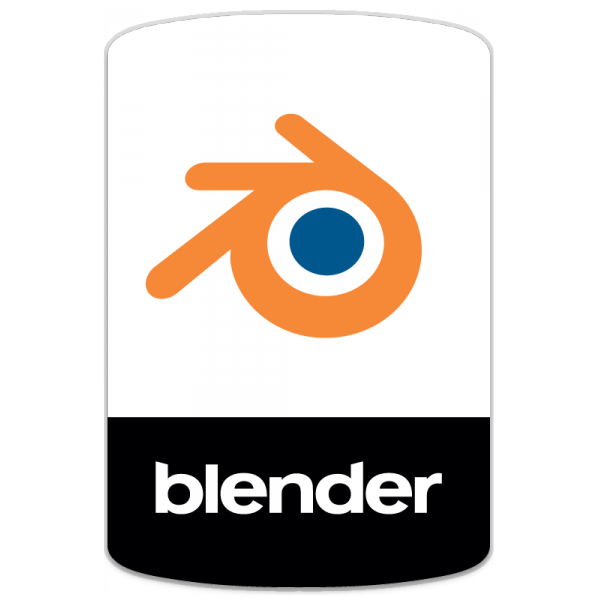

17 year old who has just completed A Levels in Maths, Computer Science and Physics with high predicted grades.
I am an aspiring student who has a passion for programming and problem-solving.
I always find that the best way (for me) to learn a digital skill is to learn through application.
So below are some of the projects I consider as 'milestones' throughout my developer journey.
Digital Skills
Python and C++ Game Development skills 3D Modelling
 HTML, CSS, JavaScript
Journey
The journey began with the general exploration of programming languages such as Python, C++, C# and HTML
Project 1
I then explored game development using the Godot game engine, and using a scripting language similar to Python called GDScript.
After spending months learning the engine and building test games, I developed my own game over the course of 3 months and released it to itch.io
This was my first developer experience. It's where I first found the enjoyment in the process of learning new concepts, implementing them and testing.
More importantly, I learnt the importance of file organisation after my project grew to contain multiple different scripts and scenes
Project 2
Following this, I learnt 3D Modelling using Blender, and made my own version of a popular Blender project: The Blender Donut.
This project gave me the opportunity to test my creativity. Learning a whole new skill and software like this expanded my problem solving ability and demonstrated my proficiency in different software and digital skills.
Project 3
During our A Level Computer Science course, we developed a game as part of our NEA coursework. Across 4 months I developed and documented the development of another game, this time using the Unity game engine and the scripting language C#.
We also learnt the basics of HTML, CSS and Javascript.
This sparked the passion in me once again, and as of recently I have further developed my skills in these languages. (All the project files from below are accessible from my Github)
Project 4
I began by following a tutorial for this game before adding basic customisation.
This project took over an hour to create and to understand
Although the code used was fairly simple and similar to that of the tutorial, this project was crucial in giving me the opportunity to play around with these programming languages and making me comfortable with HTML, CSS and JavaScript.
Project 5
Not long after, I began my next project
This project was slightly more difficult and took a couple hours of work to create and understand
I got the idea of this project from another tutorial.
However, not long after starting, my algorithmic skills from previous projects kicked in and I found I could complete the rest of the project without using the tutorial.
While the project may not be perfect or the most efficient, It was my first experience with these programming languages of writing a significant amount of code myself and understanding the debugging process when logical/syntax errors inevitably arise.
Project 6 (ongoing)
As of now, I am working on creating a website with a working calculator. The aim of this project primarily is to improve my JavaScript and CSS skills
Project 7
And lastly, I made the decision to create my own portfolio using HTML and CSS - even though I could have easily made my portfolio using templates from other websites .
Despite the fact that using a template would have been significantly easier, faster and better-looking, I felt it to be more authentic and enjoyable to instead utilise the customisability that comes with creating your own.